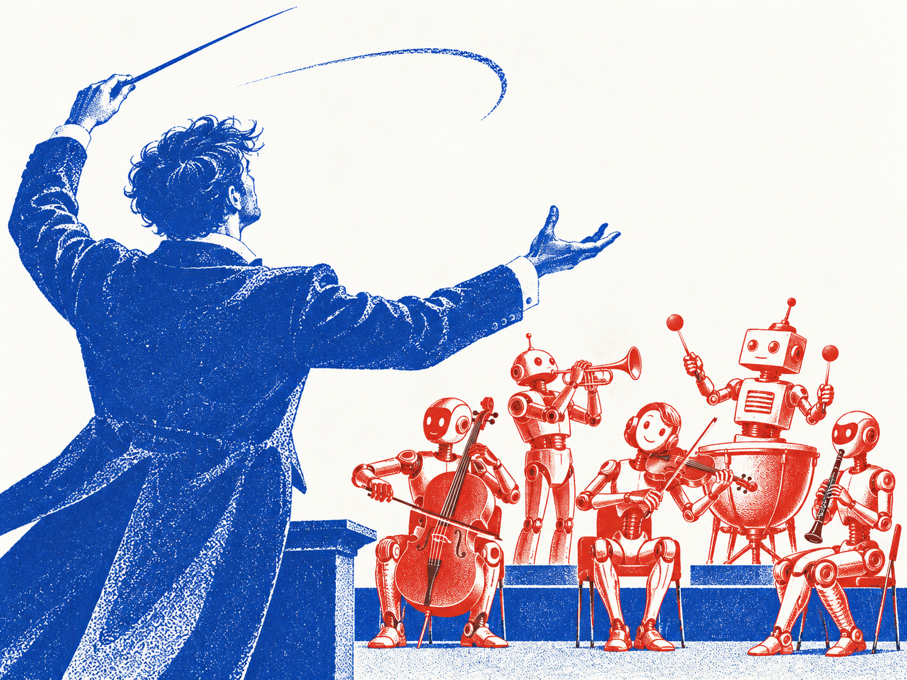

Local multi-harness collaboration
Orchestra mode.

01
Connect your harnesses.
One person, several local agents. Use Pi, Codex, Claude, or Hermes through :o.
02
Assign the work.
Mention an agent with @agent_name. Ask one to implement a change, another to review it, or another to explore an alternative.
03
Coordinate the results.
Agents take turns within a chat. Separate task chats can run in parallel, with branches or worktrees for code changes.